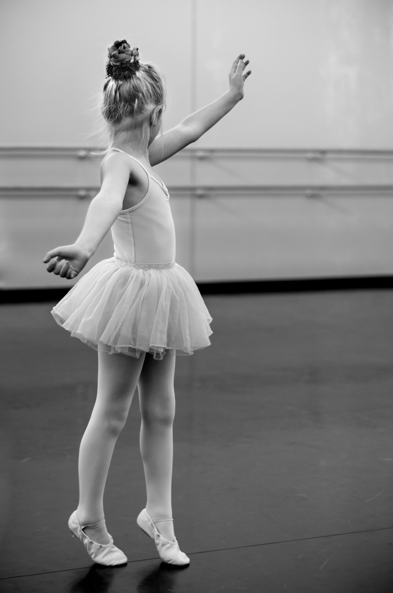

<body bgcolor="#f0f8ff">
</body>
<table border="0" align=center>
    <tr><th colspan=3 align=center>
      
<table border="0" align=center>
    </th></tr><table>
<table border="1" cellspacing="0" cellpadding=5 bordercolor="#000000" align=center>
    <tr>
        <td><center><a href="index.html"></a><footer><I><B><font size="4">Sobre a dança<I><B></footer></center></td>
         <td><center><a href="site3.html"></a><footer><I><B><font size="4">Que roupa devo usar?<I><B></footer></center></td>
         <td><center><a href="site4.html"></a><footer><I><B><font size="4">Sapatilhas de Ponta<I><B></footer></center></td>
         <td><center><a href="site5.html"></a><footer><I><B><font size="4">Melhores Bailarinos<I><B></footer></center></td>
         <td><center><a href="site6.html"></a><footer><I><B><font size="4">Melhores Escolas<I><B></footer></center></td>
<table><br>
<table border="0" align=center>
    <tr>
        <td><I><B><font size="6">Que roupa devo usar?<B><I></td></tr>
</table>
<table border="0" align=center>
    <tr>
        <td><I><B><font size="4" face="Century">As roupas mais usadas sao:<B><I></td></tr>
</table>

<table border=0 cellspacing="10"width=100% align=center>
    <tr>
         <td><font size="4" face="Century"><B>Collant:<B></td>
         <td><font size="4" face="Century">Não é obrigatório mas ajuda muito na colocação do tônus da parede abdominal, portanto é altamente recomendado! Geralmente as escolas utilizam uma cor padrão, mas qualquer um pode ser utilizado desde que seja de um tecido adequado.</td>
        

    <tr>
         <td><font size="4" face="Century"><B>Meia-Calça:<B></td>
         <td><font size="4" face="Century">Obrigatório! É mais indicado utilizar a meia-calça rosa, e também é a mais vendida, porém nada te impede de utilizar uma preta, isso vai de acordo com cada escola.</td>
        
    </tr>
  <tr>
         <td><font size="4" face="Century"><B>Saia:<B></td>
         <td><font size="4" face="Century">Opcional! É uma peça de roupa opcional mas deve ser sempre de um tecido leve e não muito longa.</td>
        
    </tr>
 <tr>
         <td><font size="4" face="Century"><B>Cabelo:<B></td>
         <td><font size="4" face="Century">Obrigatório, tem que ser coque!! E tem que ser aquele bem preso e de preferência sem nenhum cabelo caído no rosto.</td>
 
    </tr>
</table>
<table border="0" align=center>
    <tr>
        <td><I><B><font size="4" face="Century">Exemplos:<B><I></td></tr>
</table><br>
<center> <center>
<br><br>
<table border=0 width=100%>
            <td bgcolor="#00000"width="100%"><font color="#f0f8ff" face="Century"> <h3>  
               <center> Share:     Contato: ceciliamoreira2508@gmail.com ou (12)98259-1020</center> 
             </h3></font></td> </tr>
           <td bgcolor="#00000"width="100%"><font color="#f0f8ff"> <h3> 
           <center> O que achou das informações? Tem alguma sugestão?</center><br>
<center><textarea cols="70" rows="10" placeholder="Escreva aqui..."></textarea></center><br>
<center><input type="submit" id="btEnviar" value="Enviar" /></center> <br> <center><input type="reset" id="btLimpar" value="Limpar" /></center> 

</table>